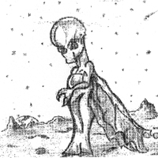

| | username // |
annapoletti
| | real name // |
Anna Poletti
| | picture // |

| | blurb // |
I am the coordinator of Music In The Sticks (MITS).
This is a FReeZa funded youth committee in the Macedon Ranges Shire.
MITS organises all kinds of drug and alcohol free events in the Shire including gigs, raves, a Masquerade Ball and community fundraising.
Music In The Sticks will be featured on ABC's noise tv on Saturday morning 27th October, 10.30 am - 11.30 am, repeated Saturday night before 'Rage'.
Check out abc.net.au/noise for more information about ABC/noise projects.
MITS are also putting together a CD called 'Live Ranges' which is a compilation of local bands and musicians, funded by the noise/AMRAP New Australian Music Programs Fund. The CD will be profiled on 3 RAM (100.7) - Voice Of The Ranges community radio in the Central Highlands of Victoria, as well as on the community radio satellite network.
| | web address // |
http://www.freeza.vic.gov.au
| | age // | 26
| | creative stuff // |
| | email // |
email Anna
|
|
|